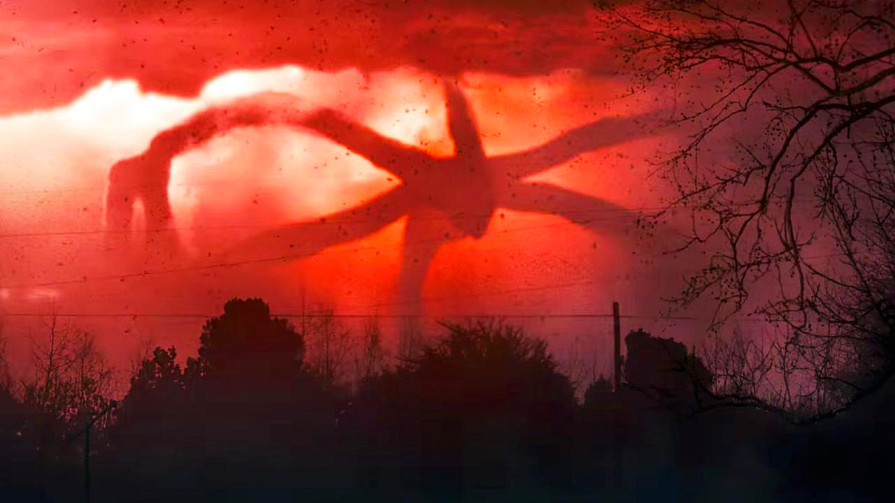
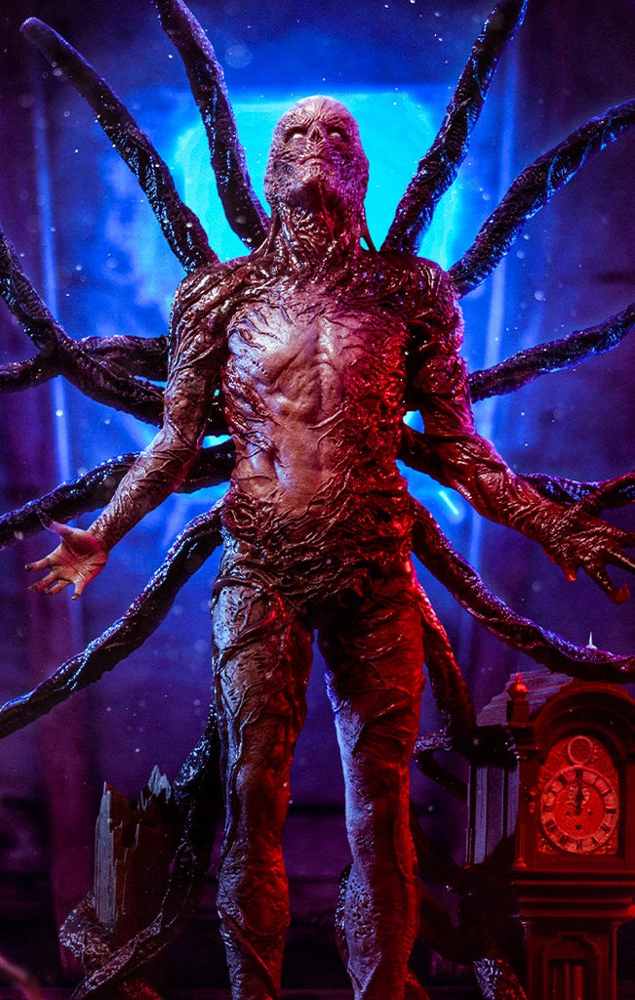
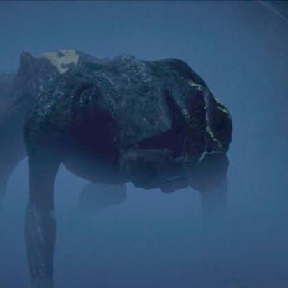
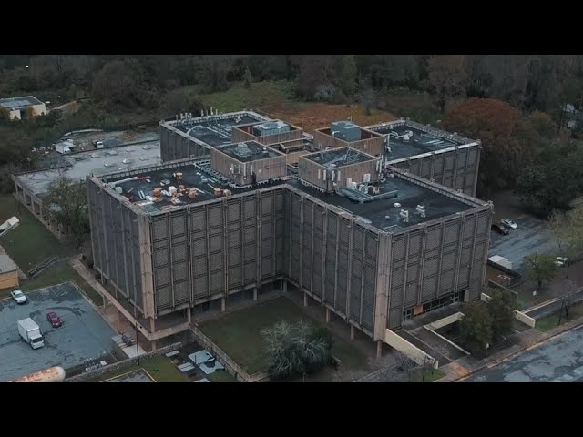
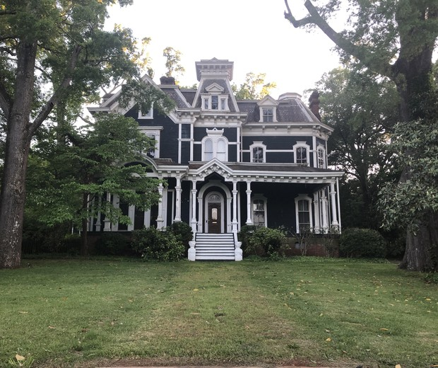

ELEMENTOS DA SERIE

MUNDO INVERTIDO
O Mundo Invertido é uma dimensão paralela sombria e distorcida, que é uma réplica da cidade de Hawkins, mas congelada no tempo em 6 de novembro de 1983. Ele surgiu da mistura do nosso mundo com a "Dimensão X" quando Eleven acidentalmente abriu o portal original ao entrar em contato com um Demogorgon. É um lugar decadente, coberto por uma tempestade vermelha constante, e habitado por criaturas como Demogorgons e as vinhas carnívoras
MONSTROS QUE RODEIAM A SÉRIE
Demogorgon:

Criatura quadrúpede com uma cabeça que se abre como uma flor, revelando dentes afiados. Inicialmente, parece uma lesma, depois evolui.
DEVORADOR DE MENTES:
Devorador de Mentes: Uma entidade gigante que comanda outros monstros, parecendo uma aranha gigante de fumaça e tentáculos. É o principal antagonista da terceira temporada.
VECNA:
Vecna é uma entidade sombria do Mundo Invertido com forte poder mental. Antes humano, tornou-se o principal vilão responsável por manipular e atacar suas vítimas.
DEMOCÃES:
Democães: A forma jovem do Demogorgon que Dustin encontra, que ele apelida de D'Artagnan (Dart).
LABORATÓRIO DE HALKINS:
O Laboratório de Hawkins é uma instalação secreta do governo onde são feitos experimentos perigosos, incluindo testes psíquicos em crianças como Eleven. Foi lá que se abriu o portal para o Mundo Invertido, desencadeando os eventos da série.
CASA CREEL:
A Casa Creel é a antiga residência da família Creel, marcada por acontecimentos sobrenaturais e assassinatos misteriosos. Ela se torna um ponto central da investigação dos personagens ao revelar a origem de Vecna.